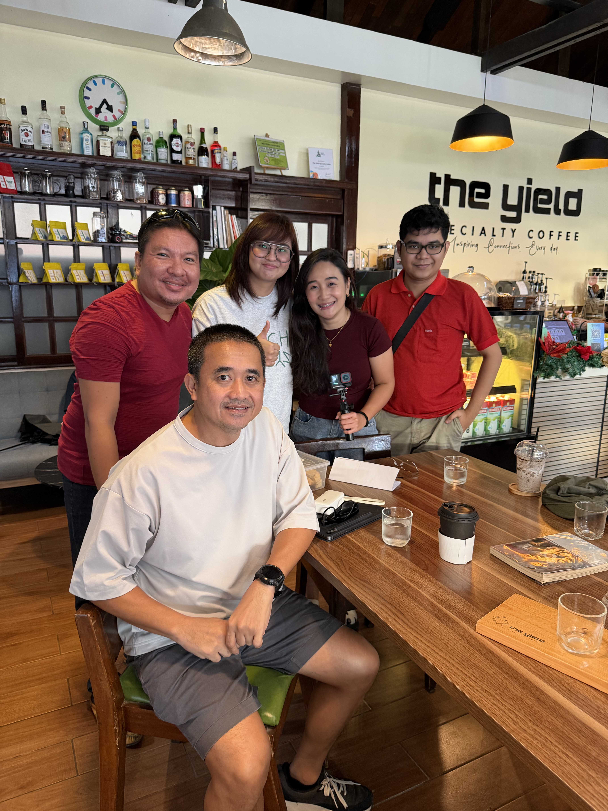

Overview & Team With Client
Welcome to our professional portfolio collective. As part of the DICT ILCDB SPARK Program, our specialized team engineered end-to-end digital marketing solutions, brand foundations, local search visibility, and community playbooks for our client, M&C Bakehouse located along Lopez Jaena Street, Jaro, Iloilo City.

DICT ILCDB SPARK Program Digital Marketing Scholars Team

Client Collaboration & Field Operations at M&C Bakehouse, Jaro